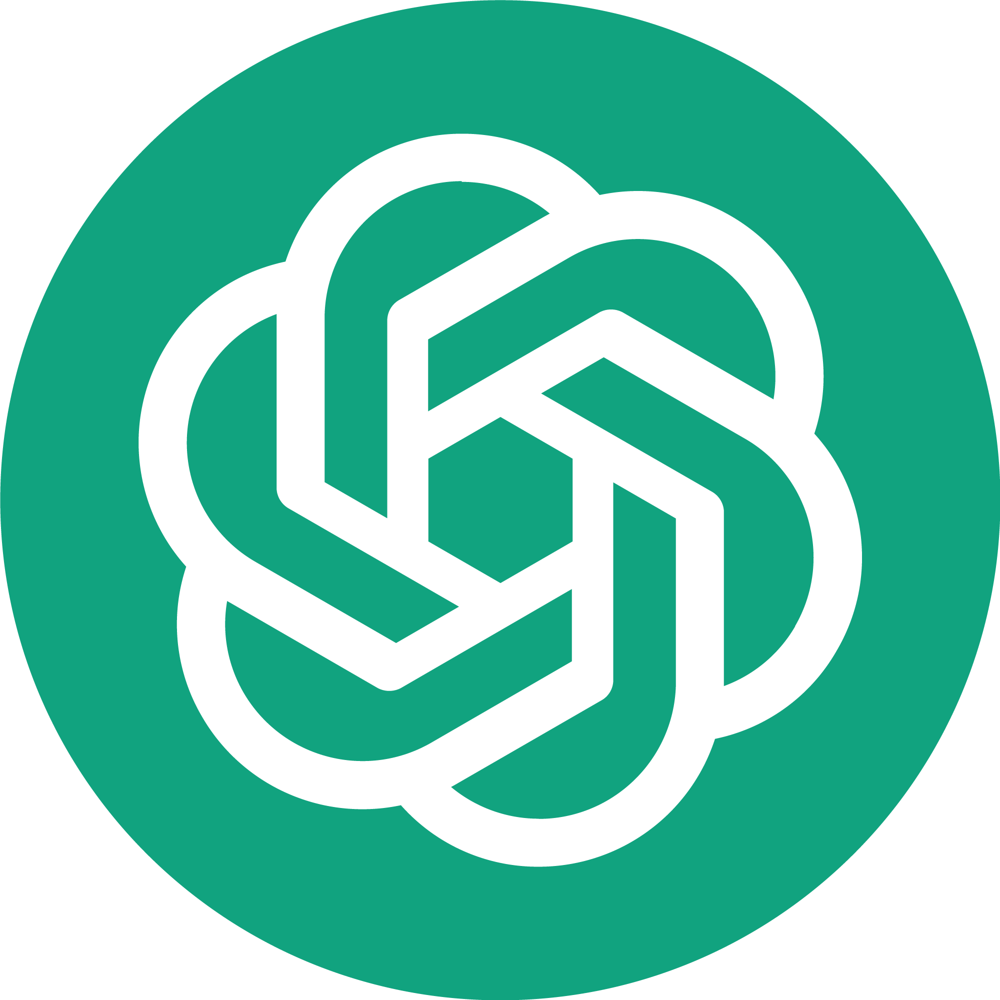
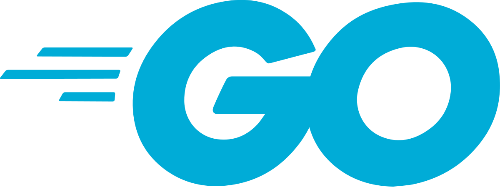

Tecnologías de la era actual
En los últimos años la tecnología a avanzado enormemente dirigida principalmente al campo de la computación y está ramificando a multiplescampos profesionales, laborales y sociales y lo que hoy en día es normal o incluso algo novedoso anteriormente se le consideraba ciencia ficción siendo así algo que es bastante increíble pensar cómo es que a evolucionado la tecnología hasta hoy pero que se puede destacar de nuestra tecnologia actualmente prueba de esta se les mencionara a continuación las mas interesantes y relevantes tecnologías que han surgido estos últimos años.
La Nube
Algo que ya tiene tiempo en uso pero que sigue siendo bastante útil que simplemente no se puede ignora ya que es una herramienta bastante útil ya que esta esta en un constante mejoramiento para los usuarios además de una parte vital para muchas personas ya que actualmente la información es muy preciada para todos y con esto se resuelven muchos problemas y para esto las plataformas lideres en son: AWS, Azure, Google Cloud.
Igualmente no se puede dejar atrás las tendencias de hoy en día como lo son: Contenedores (Docker, Kubernetes), funciones serverless (Lambda, Azure Functions), plataformas multi-nube.

ciberseguridad
Algo que viene de la mano con la nube es la ciberseguridad que como su nombre lo dice se encarga de la seguridad cibernética de información y como se dijo anteriormente la información es lo mas valioso actualmente es por lo mismo que se requiere métodos para proteger dicha información y las tecnologías actuales resuelven varios de esos problemas como. La arquitectura Zero Trust, basada en el principio de "nunca confiar, siempre verificar". Este modelo redefine la seguridad al exigir autenticación continua, aplicar controles de acceso mínimos y segmentar la red de manera inteligente.
Otro avance clave es la seguridad impulsada por inteligencia artificial y machine learning. Estos sistemas son capaces de detectar patrones anormales y anticiparse a ciberataques antes de que causen daño, mediante el análisis predictivo y la automatización de respuestas.
Inteligencia Artificial (IA)
Uno de los temas más importantes es la inteligencia artificial que está redefiniendo la forma en que interactuamos con la tecnología. Desde asistentes virtuales hasta sistemas que generan contenido, la IA se ha convertido en una herramienta clave para automatizar procesos, mejorar la toma de decisiones y ofrecer experiencias personalizadas.
En el desarrollo de software, frameworks como TensorFlow y PyTorch permiten crear modelos capaces de aprender y adaptarse. Estos sistemas se aplican en áreas como análisis de datos, visión computacional, procesamiento del lenguaje natural y más recientemente, en IA generativa, usada para crear texto, imágenes o incluso código.

Los diferentes lenguajes de programación
Desde los inicios de la informática, los lenguajes de programación han sido la base de toda innovación tecnológica. Los primeros lenguajes como Fortran (1957), diseñado para cálculos científicos, COBOL (1959), orientado a negocios, y Lisp, pionero en inteligencia artificial, marcaron el inicio de una revolución. A ellos les siguieron lenguajes como C y Pascal, que cimentaron las bases de la programación estructurada moderna.

Hoy, la programación se ha expandido en múltiples direcciones, con lenguajes adaptados a distintos entornos y necesidades. Python lidera por su simplicidad y versatilidad, ampliamente usado en ciencia de datos, IA y desarrollo web. JavaScript domina el desarrollo frontend y full stack gracias a frameworks como React y Node.js. Java y C# siguen siendo esenciales en entornos empresariales, mientras que C++ destaca en sistemas de alto rendimiento como videojuegos o software embebido.


La evolución continúa, impulsada por nuevas necesidades tecnológicas, la inteligencia artificial y la demanda de eficiencia, escalabilidad y seguridad. Aprender a programar hoy no solo abre la puerta al desarrollo de software, sino también a formar parte del futuro digital.